Originaltittel (svensk): Canton går in i Sydkorea – vill tokenisera landets finansmarknad
Canton Foundation har inngått ein samarbeidsavtale med det sørkoreanske verdipapirselskapet Meritz Securities for å undersøkje korleis tradisjonelle finansielle eigedelar som obligasjonar kan tokeniserast og gjerast tilgjengelege for institusjonelle investorar internasjonalt, melder Kryptovalutaguiden. Ifølgje artikkelen er avtalen som vart signert 15. oktober ei intensjonsfråsegn, som tyder at partane skal vurdere moglege bruksområde i staden for å lansere ei ferdig teneste. Kryptovalutaguiden peikar på at kor langt samarbeidet kan gå, mellom anna avheng av Sør-Koreas reglar for digitale verdipapir.
Kjelde: Kryptovalutaguiden 16. okt. 2026 Tokenisation Business
Originaltittel (norsk): Kryptokamp i Kautokeino: – Hvor vanlig er utvinning?
Stortingsrepresentant Lars Haltbrekken (SV) har stilt eit skriftleg spørsmål til digitaliserings- og forvaltningsminister Torgeir Micaelsen (Ap) om kor vanleg kryptoutvinning er, melder Altaposten i ei sak om ei datasenteretablering i Kautokeino. Resten av artikkelen ligg bak betalingsmur, så innhaldet i spørsmålet og eventuelle svar er ikkje synlege.
Kjelde: 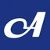
altaposten.no 15. okt. 2026 · kan krevje abonnement Mining Policy
Originaltittel (norsk): Gjennomføring av nivå 2-regelverk under MiCA
Finanstilsynet har fastsett ei endring i kryptoeigedelsforskrifta som gjennomfører kommisjonsforordning (EU) 2024/1504 i norsk rett, melder tilsynet. EU-forordninga har saksbehandlingsreglar for korleis Den europeiske banktilsynsmyndigheita ilegg utferdarar av signifikante eigedelsbaserte token og signifikante e-pengetoken overtredingsgebyr eller tvangsmulkt. Ifølgje Finanstilsynet er forordninga i EØS-avtalen tilpassa slik at EFTAs overvakingsorgan (ESA) har denne myndigheita overfor føretak etablerte i EØS/EFTA-statane.
Kjelde: 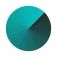
Finanstilsynet 15. okt. 2026 Regulering MiCA Stablecoins
Primærkjelde: finanstilsynet.no
Originaltittel (norsk): EU-tilsyn strammer grepet om kryptovalutaer
Europeiske kryptoselskap skal slutte å tilby tenester knytte til stablecoins som ikkje oppfyller EU-reglane, melder Finanswatch under tittelen om at eit EU-tilsyn strammar grepet om kryptovalutaer. Resten av artikkelen ligg bak betalingsmur, og den synlege teksten seier ikkje kva stablecoins det gjeld, eller kva dokument kravet kjem frå.
Kjelde: Finanswatch 15. okt. 2026 · kan krevje abonnement Regulering Stablecoins MiCA
Originaltittel (norsk): Den svenske Riksbanken ber Riksdagen forberede en digital krona
I eit brev til finansutskottet i Riksdagen, datert 7. oktober og offentleggjort 15. oktober, ber den svenske Riksbanken om at arbeidet med lovverket for ei mogleg digital krona startar no, melder Kaupr. Riksbanken viser til den forverra tryggingssituasjonen, planane for ein digital euro og veksten i stablecoins, og reknar med at ei innføring vil ta minst fem år i tillegg til lovarbeidet. Riksbanken understrekar at han ikkje har teke stilling til om ei digital krona bør innførast; banken føreslår at førebuingane startar med ei offentleg utgreiing, og ei eventuell utferding krev samtykke frå Riksdagen.
Kjelde: 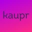
Kaupr 15. okt. 2026 Policy Stablecoins Banking
Primærkjelde: Sveriges Riksbank – Skrivelse till finansutskottet: information om utveckling som aktualiserar frågan om en digital krona (dated 2026-10-07, published 2026-10-15)
Originaltittel (finsk): Turkkilaismedia: Suomen etsintäkuuluttama kryptomiljonääri otettu kiinni Turkissa
Richard James Schueler, ein amerikansk kryptomillionær som er etterlyst av Finland og òg kjend som Richard Heart, er pågripen i Istanbul, ifølgje tyrkiske medium; Yle melder dette via STT med tilvising til den tyrkiske nettstaden Daily Sabah og nyheitsbyrået IHA. Pågripinga er så langt berre meld av tyrkiske medium. Helsingfors tingrett varetektsfengsla Schueler in absentia i september 2024 som mistenkt for grovt skattesvik, og Hämeen Sanomat skriv at politiet i Helsingfors mistenkjer han for å ha unndrege om lag 280 millionar euro i skatt i kryptoverksemda si.
Kjelde: 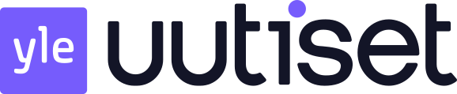
Yle Uutiset 14. okt. 2026 Crime TAX
Originaltittel (svensk): Kryptojätten köper bank med svenska sparkunder
Payward, det amerikanske selskapet bak kryptobørsen Kraken, kjøper den litauiske banken Saldo Bank, som har hatt EU-banklisens sidan 2021 og tilbyr sparekontoar og andre tenester til kundar i mellom anna Sverige, melder Realtid med tilvising til Financial Times. Ifølgje FT blir Payward med dette det første selskapet i sektoren for digitale eigedelar som kjøper ein bank i Europa, og banken skal hjelpe selskapet å utvikle utlån og betalingskort. Oppkjøpet krev godkjenning frå styresmaktene og er venta fullført i 2027.
Kjelde: 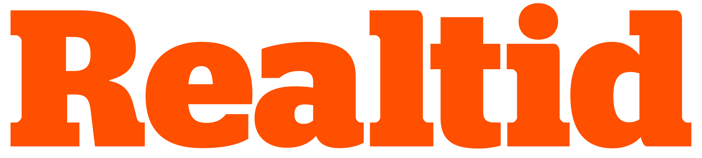
Realtid 14. okt. 2026 Business Banking
Originaltittel (norsk): Datasentre betalte under 12 millioner skatt totalt: – Dette må det bores mer i
Færre enn halvparten av datasenteraktørane i Noreg betalte selskapsskatt for 2024, medan kryptoutvinnarar står bak fleire av dei største skattebidraga, melder Digi.no frå ei fersk oversikt. Ifølgje den synlege delen av artikkelen, som ligg bak betalingsmur, omfattar lista 55 aktørar og kjem frå eit svar frå digitaliseringsminister Torgeir Micaelsen til stortingsrepresentant Lars Haltbrekken (SV).
Kjelde: Digi.no 14. okt. 2026 · kan krevje abonnement Mining TAX
Originaltittel (norsk): Stablecoin-samarbeid med nordiske banker får godkjenning – lanserer om kort tid
Eit selskap som er støtta av 37 bankar, mellom dei nordiske bankar, har fått ei viktig autorisasjon og førebur lansering av blokkjedebaserte eurotokenar under EU-regelverket MiCA, melder Finanswatch. Ifølgje tittelen på artikkelen, som ligg bak betalingsmur, er lanseringa venta om kort tid. Den synlege teksten gir ikkje fleire detaljar.
Kjelde: Finanswatch 14. okt. 2026 · kan krevje abonnement Stablecoins MiCA Banking
Originaltittel (svensk): Skattesmocka hotar tyska kryptosparare
Tyskland er på veg mot skattereglar som er mindre gunstige for kryptoinvesteringar, melder EFN via nyheitsbyrået Direkt med tilvising til den tyske avisa Wirtschaftswoche. Ifølgje meldinga vil regjeringa fjerne skattefritaket for gevinst på krypto som er halden i meir enn eitt år, og bruke kjeldeskatt i staden for individuell inntektsskatt, og saka var venta på dagsordenen på eit møte onsdag. Representantar for bransjen er kritiske til dei planlagde endringane.
efn 14. okt. 2026 TAX Policy
Originaltittel (norsk): Spørsmål i Stortinget: – Nye datasenter utvinner krypto?
Ein påstand frå dataselskapet Arctic Core AS overfor Kautokeino kommune, om at krypto er vanleg og velkjent i datasenterbransjen, er no tema for eit spørsmål i Stortinget, melder lokalavisa Ságat. Saka følgjer opp Ságats tidlegare melding om at Arctic Core vedgjekk at selskapet skal drive med «litt» kryptoutvinning i Kautokeino. Resten av artikkelen ligg bak betalingsmur.
Ságat 14. okt. 2026 · kan krevje abonnement Mining Policy
Originaltittel (svensk): Kryptovalutabörs stämd på över 260 miljoner kronor
Ein programvareingeniør har gått til søksmål i Storbritannia mot kryptobørsen BitMEX og krev 20 millionar pund (om lag 264 millionar svenske kroner) for bitcoin som skal ha gått tapt på finansielle derivat, melder Dagens PS med tilvising til The Guardian. Søksmålet hevdar at BitMEX selde uregulerte finansielle produkt til britiske investorar utan løyve frå Financial Conduct Authority, og at slike kontraktar difor kan vere ugyldige etter britisk lov. HDR Global Trading, som eig BitMEX, ville ikkje kommentere saka, og ein representant sa at stemninga enno ikkje er formelt forkynt.
Dagens PS 14. okt. 2026 Regulering Consumer protection
Originaltittel (norsk): Bitcoin presses av rekordstore uttak
Børsnoterte bitcoin-produkt hadde netto uttak på 10 064 bitcoin på fem dagar, det største sidan 15. september, medan bitcoin fall frå 86 000 til under 80 500 dollar, ifølgje K33s vekerapport slik Investornytt omtaler han. Analysesjefen i K33 meiner fallet hovudsakleg kjem av ei breiare flukt frå risiko. Ifølgje K33s vekerapport er opne posisjonar i evigvarande terminkontraktar på eit femmånaders botnnivå, noko som gjer tvangslukking lite sannsynleg, og K33 meiner framleis at bitcoin er attraktivt prisa med avgrensa nedside.
Investornytt 13. okt. 2026 Bitcoin Business
Originaltittel (svensk): Frankrike vill beskatta kryptomiljonärer som flyttar utomlands
Realtid melder, med tilvising til Euronews og Journal du Coin, at finanskomiteen i nasjonalforsamlinga i Frankrike røysta for å utvide utflyttingsskatten til kryptoeigedelar over 800 000 euro frå 2027, og støtta bøter på opptil 10 000 euro for ikkje-deklarerte eigne lommebøker verde minst 100 000 euro. Forslaga er ikkje vedtekne og kan framleis falle.
Kjelde: Realtid 12. okt. 2026 TAX Regulering
Originaltittel (dansk): Bred enighed om ny kryptoskat: Forslaget har ligget i skuffen i over et år
Børsen melder at ei brei arbeidsgruppe med styresmakter, næringsliv og kryptobransjen vart samde om ein ny modell for kryptoskatt for over eit år sidan, men at forslaget sidan har vorte liggjande. No varslar regjeringa nye reglar.
Kjelde: Børsen 12. okt. 2026 · kan krevje abonnement TAX Regulering
Originaltittel (norsk): Amerikansk finanspresse oppdager at tokenisering endrer børs og aksjehandel
Kaupr samanfattar nyleg dekning i amerikansk finanspresse og skriv at Barron's, Wall Street Journal, CNBC og Bloomberg alle skreiv om tokenisering av aksjar tidleg i oktober. Ifølgje denne dekninga kan tokeniserte aksjar gje handel døgnet rundt og raskare oppgjer, og eit samarbeid mellom ICE og OKX førebur tokenisering av aksjar.
Kjelde: Kaupr 12. okt. 2026 Tokenisation
Originaltittel (norsk): Krypto i Kautokeino: – Kommunen vært naiv
I ei oppfølging av den tidlegare saka om at dataselskapet Arctic Core vedgår «litt» kryptoutvinning på tomta si i Kautokeino, melder Ságat at det lokale laget av Naturvernforbundet vil at kommunen trekkjer byggjeløyvet. Klaga vert ikkje handsama før i november, då ho kan verte send vidare til statsforvaltaren.
Ságat 12. okt. 2026 · kan krevje abonnement Mining Energy
Originaltittel (svensk): Manipulation: Kryptoplånböcker tömdes på 860 miljoner
Dagens PS melder, med tilvising til The Verge, at eit mistenkt angrep på leveransekjeda med eit skjult kretskort i somme Ledger-maskinvarelommebøker kan ha late ein angripar fange opp gjenopprettingsfrasar og tømme kontoar, med tap anslått til om lag 86 millionar dollar. Ledger har stadfesta ein uautorisert maskinvarekomponent i eininga til éin råka brukar og bede den aktuelle forhandlaren stanse salet medan saka vert granska.
Dagens PS 11. okt. 2026 Security Wallets
Originaltittel (norsk): Spillpioner og kapitalforvalter satser sammen på tokenisering
Kaupr melder, basert på kunngjeringa frå selskapa under TOKEN2049 i Singapore, at spel- og Web3-selskapet Animoca Brands og kapitalforvaltaren Franklin Templeton har inngått eit strategisk samarbeid kring NUVA, marknadsplassen til Animoca for tokeniserte eigedelar. Ifølgje selskapa har dei òg lansert ein forskingsserie i fire delar om tokenisering.
Kjelde: Kaupr 9. okt. 2026 Tokenisation
Originaltittel (norsk): Aksjer på blokkjeden kan forsterke børsuro
Investornytt melder at eit kapittel om tokenisering i IMF-rapporten om finansiell stabilitet fann om lag 50 prosent større kurssvingingar i utvalet av tokeniserte aksjeprodukt enn i tradisjonelle marknader, og klart svakare likviditet. IMF åtvarar om at automatiske tvangssal kan forsterke uro når marknaden veks.
Investornytt 9. okt. 2026 Tokenisation Regulering
Originaltittel (norsk): AI kan tømme lommebøkene
Investornytt melder at Ethereum Foundation-forskaren Justin Drake meiner kunstig intelligens i verste fall kan knekke ECDSA, signatursystemet bak Bitcoin- og Ethereum-lommebøker, i løpet av månader, og rår til å flytte midlar til adresser utan eksponert offentleg nøkkel. Vitalik Buterin tek risikoen på alvor, men åtvarar mot panikk.
Investornytt 8. okt. 2026 Security
Originaltittel (norsk): Eksperimenterer med den norske kronen i internasjonal sandkasse
FinFacts har intervjua DNB om eksperimenta banken gjer med norske kroner i ei internasjonal sandkasse for tokeniserte bankinnskot. Ifølgje ingressen i artikkelen har DNB stor tru på at tokeniserte bankinnskot vil spele ei minst like viktig rolle som stablecoins når framtidas digitale pengar skal formast. Heile intervjuet ligg bak betalingsmur.
FinFacts 7. okt. 2026 Tokenisation Banking
Originaltittel (norsk): Innrømmer «litt» kryptoutvinning
Dataselskapet Arctic Core vedgår no at det skal drive med «litt» kryptoutvinning i Kautokeino, melder lokalavisa Ságat. Skriftleg hevdar selskapet at det å bruke kryptoutvinning til å skaffe inntekter i ein testfase ikkje endrar den grunnleggjande karakteren til lagerbygget det har fått løyve til. Ifølgje Ságat er bygget hovudsakleg meint for testing og lagring av utstyr.
Ságat 7. okt. 2026 · kan krevje abonnement Mining
Originaltittel (svensk): 30 nya namn på varningslistan – akta dig för företagen
Finansinspektionen i Sverige åtvarar mot 30 nye aktørar som ser seriøse ut, men manglar løyve; fleire lokkar med handel i aksjar, krypto og valuta, og nokre er klonselskap som brukar opplysningar frå ekte finansselskap. FI har dermed åtvara mot 227 aktørar som er mistenkte for investeringssvindel så langt i 2026, og ber folk sjekke selskapsregisteret før dei overfører pengar.
Nyheter24 6. okt. 2026 Crime Consumer protection
Primærkjelde: fi.se
Originaltittel (svensk): Amla föreslår tre tekniska standarder enligt penningtvättsförordningen
EUs kvitvaskingsstyresmakt AMLA har sendt tre endelege utkast til tekniske standardar under den nye kvitvaskingsforordninga til EU-kommisjonen, melder svenske Finansinspektionen; Kommisjonen må framleis vedta dei. Ifølgje rapporten til AMLA må kryptotenestetilbydarar vurdere om ein kunde har gjort tre eller fleire transaksjonar på 12 månader når dei avgjer om det ligg føre eit kundeforhold, bruke eit vindauge på éin månad for samankopla transaksjonar og halde på terskelen på 1 000 euro for enkeltståande transaksjonar.
Kjelde: 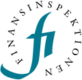
Finansinspektionen (SE FSA) 5. okt. 2026 Kvitvasking Regulering
Originaltittel (norsk): Småsparere hamstret krypto under renteuro
Kundane på den norske kryptobørsen Firi kjøpte krypto for 16,1 millionar kroner meir enn dei selde i september, med ei omsetning på 313,5 millionar kroner, trass i ein uroleg månad. Bitcoin var mest kjøpt, medan mange flytta pengar frå XRP til bitcoin og solana; Firi-sjef Thuc Hoang ser stigande amerikanske renter som den største risikoen.
Finansavisen 5. okt. 2026 · kan krevje abonnement Business
Originaltittel (norsk): Ace Digital tjente 6,3 millioner kroner i tredje kvartal
Ace Digital, som er notert på Euronext Growth Oslo, rapporterte eit urevidert nettoresultat på 6,32 millionar kroner for tredje kvartal, med eigenkapital opp 19,3 prosent til 39,09 millionar kroner og gjelda redusert til null. Selskapet seier verdien av bitcoinbehaldninga steig 373 prosent utan kjøp av bitcoin, og reknar den økonomiske eksponeringa til rundt 57 BTC.
Kjelde: Kaupr 5. okt. 2026 Business Bitcoin
Primærkjelde: Ace Digital – Q3 2026 Update (MFN)
Originaltittel (norsk): Representantforslag om konsesjonssystem for etablering av datasentre
Stortingsrepresentantar frå SV har føreslått ei «panikklov» som set nye datasenter på vent til bransjen er regulert, og eit nasjonalt konsesjonssystem for datasenter. Dei ber òg regjeringa raskt kome tilbake med korleis vedtaket i Stortinget om forbod mot kryptoutvinning i Noreg skal følgjast opp; dette er eit forslag, ikkje eit vedtak.
Kjelde: 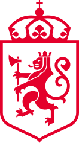
Stortinget 5. okt. 2026 Mining Policy
Originaltittel (norsk): Rødt foreslår midlertidig stans for nye datasentre
Raudt har føreslått på Stortinget ein mellombels stans for nye datasenter, saman med ei konsesjonsordning og andre tiltak. Grunngjevinga seier at datasenter som utvinn kryptovaluta får straumtilgang framfor hjørnesteinsbedrifter, og at kryptoforbodet Stortinget har bede om tre gonger på to år framleis ikkje er på plass, men ingen av forslaga gjeld krypto særskilt.
Kjelde: Stortinget 5. okt. 2026 Mining Policy
Originaltittel (svensk): Så kan Sverige användas för att finansiera kärnvapen
Kryptoeigedelar og ulovlege finansielle nettverk er dei største risikoane for at FN-sanksjonane mot Iran og Nord-Korea blir omgått via Sverige, ifølgje ei ny nasjonal risikovurdering frå ti svenske styresmakter, melder Realtid. Styresmaktene seier at organisert kriminalitet har bygt opp ein ulovleg finansiell infrastruktur for kontantar, gull og veksling til krypto som òg kan nyttast til slik finansiering. Realtid peikar òg på at ingen er dømde for sanksjonsbrot i Sverige på fem år.
Kjelde: Realtid 3. okt. 2026 Regulering Kvitvasking
Originaltittel (svensk): Uppgifter: Tonåringar silvertejpade man i jakt på kryptovaluta
Tre tenåringar, to på 19 og ein på 16 år, er pågripne i Lund mistenkte for menneskerov og grovt våpenbrot, melder Sydsvenskan. Ifølgje opplysningar til avisa hadde dei teke på seg eit oppdrag om å rane ein lokal mann for kryptovaluta og batt han med gaffateip. Politiet har sagt lite om detaljane og omtalte først hendinga som bråk i ei leilegheit.
Kjelde: Sydsvenskan 2. okt. 2026 Crime
Originaltittel (norsk): Tiltalt for dopsalg mot kryptovaluta på det mørke nettet
Tre nordmenn og ein svenske er tiltalte i ei stor narkotikasak med forgreiningar til utlandet, opplyser Sør statsadvokatembete, ifølgje Aftenposten. Dei fire blir knytte til omsetnad og oppbevaring av om lag 135 kilo amfetamin og metamfetamin, om lag 630 kilo hasj og marihuana, om lag 29 kilo kokain og godt over 200 000 tablettar. Ifølgje påtalemakta gjekk mykje av omsetnaden føre seg på det mørke nettet, med betaling i kryptovaluta.
Kjelde: Aftenposten 2. okt. 2026 · kan krevje abonnement Crime
Originaltittel (svensk): Kryptojätten i ny kontrovers – erbjöd tjänster i Europa utan licens
EU-tilsyn granskar Binance for å ha halde fram med å tilby tenester til europeiske kundar utan lisensen MiCA krev, melder Realtid med tilvising til Financial Times. ESMA og nasjonale styresmakter i mellom anna Frankrike, Tyskland og Hellas ser på korleis Binance nyttar det smale unntaket for «reverse solicitation», som berre gjeld når kunden sjølv tek initiativet. Binance seier selskapet følgjer gjeldande reglar og arbeider for å få MiCA-lisens.
Kjelde: Realtid 1. okt. 2026 Regulering MiCA
Originaltittel (svensk): Krypto-jätten rundar reglerna i Europa: Riskerar att kastas ut
Binance manglar lisensen EU-regelverket MiCA krev og skulle frå 1. juli ha byrja å avvikle verksemda i EU, men somme europeiske kundar handlar framleis, melder Dagens PS med tilvising til Financial Times. Børsen lener seg på unntaket for «reverse solicitation», som ESMA seier må forståast svært snevert. Styresmaktene kan be om meir informasjon og, om dei avviser Binance sine argument, gå vidare med tilsynstiltak og bøter; Binance seier selskapet følgjer gjeldande reglar.
Dagens PS 1. okt. 2026 Regulering MiCA
Originaltittel (svensk): Här är riskerna för finansiering av spridning av massförstörelsevapen störst
Finansinspektionen melder at ei ny nasjonal risikovurdering meiner risikoen for finansiering av spreiing av masseøydeleggingsvåpen er størst i ulovleg finansiell verksemd og ved bruk av kryptoeigedelar. Vurderinga kjem frå dei ti styresmaktene i det svenske Sanktionssamverkansrådet. Ho er avgrensa til resolusjonar frå FNs tryggingsråd med målretta økonomiske sanksjonar mot Nord-Korea eller Iran.
Kjelde: Finansinspektionen (SE FSA) 1. okt. 2026 Regulering Kvitvasking
Originaltittel (norsk): GreenMerc kutter 4,8 millioner i året – Northcrypto går med overskudd
GreenMerc, det svenske børsnoterte konsernet bak Trijo og finske Northcrypto, seier at dei har kutta dei løpande kostnadene med om lag 400 000 svenske kroner i månaden, eller rundt 4,8 millionar i året, med full effekt frå oktober. Ifølgje selskapet gjekk Northcrypto med positivt driftsresultat i juli og august etter at Trijos svenske kundar vart flytte over til den MiCA-lisensierte plattforma. Ressursane som blir frigjorde, går til banktilbodet Trijo One, som selskapet utviklar med Marginalen Bank, melder Kaupr.
Kjelde: Kaupr 30. sep. 2026 Business
Gersemi Crypto Fund, eit nytt long/short-hedgefond forvalta av den tidlegare topprangerte shippinganalytikaren Joakim Hannisdahl, har stige 39 prosent sidan oppstarten 5. august, ifølgje Hannisdahl, melder Finansavisen. Fondet blir styrt berre av ein matematisk modell han held hemmeleg, og som han seier viste svært høg avkastning i backtesting. Hannisdahl understrekar at strategien er ekstremt volatil og har svært høg risiko.
Finansavisen 28. sep. 2026 · kan krevje abonnement Funds
Originaltittel (finsk): Yhteisöllisyys ja teknologia kiehtovat kryptovaluuttoihin sijoittaneita – kryptotapahtumassa iloittiin bitcoinin uudesta nousurallista
Om lag 700 kryptoentusiastar frå Finland og utlandet deltok på bitcoin-arrangementet Btchel på Kaapelitehdas i Helsingfors, der mange sa at fellesskapet betyr meir for dei enn bitcoinkursen, melder Yle. Stemninga var god etter at bitcoin hadde stige til over 86 000 dollar i løpet av veka, etter å ha falle til litt over 58 000 dollar i sommar. Nordnet sa til Yle at den typiske kryptoinvestoren på plattforma deira er ein mann mellom 31 og 50 år.
Kjelde: Yle Uutiset (latest) 27. sep. 2026 Community Bitcoin
Originaltittel (norsk): Fant hemmelig passord: Låste opp krypto-lommeboken
Politiet har låst opp kryptolommeboka til ein NHH-student i 20-åra som er sikta i ei narkotikasak, etter å ha funne ei gjenopprettingsfrase på tolv ord under ransaking i bustaden hans, melder Nettavisen med tilvising til Bergensavisen. Politiadvokaten seier at verdiar for fleire hundre tusen kroner er overførte frå lommeboka og tekne i beslag. Hordaland tingrett har avgjort at studenten skal sitje i varetekt til rettssaka startar i midten av november.
Kjelde: Nettavisen 26. sep. 2026 · kan krevje abonnement Crime
Originaltittel (norsk): Safello åpner for at andre selskaper kan tilby kryptokjøp
Den svenske kryptobørsen Safello testar ei «crypto checkout»-løysing som lèt selskap utan eiga kryptoverksemd tilby kryptokjøp i tenestene sine, under Safellos MiCA-lisens, melder Kaupr. Kjøparane blir Safello-kundar gjennom den vanlege kundekontrollen, og den første testen går i Sverige med éin ikkje namngjeven partnar og på bitcoin.se, som Safello eig. Safello seier det er for tidleg å anslå kva piloten betyr økonomisk.
Kjelde: Kaupr 24. sep. 2026 Business MiCA
Originaltittel (norsk): Coinmotion og K33 inngår nordisk kryptosamarbeid om institusjonell handel
Den finske kryptomeklaren Coinmotion, som har kundar i Finland og Sverige, har valt K33 som partnar for institusjonell utføring av større handlar, melder Kaupr. Etter avtalen held Coinmotion på kundeforholdet og plattforma, medan K33 utfører handlane, og begge selskapa har MiCA-lisens. Administrerande direktør i K33 seier at det felles regelverket i MiCA gjer slike samarbeid enklare.
Kjelde: Kaupr 24. sep. 2026 Business MiCA
Originaltittel (norsk): Skal ha stjålet fra egen bedrift – brukte pengene på krypto
Ein mann er tiltalt for grovt underslag frå sitt eige selskap, og han skal ha brukt pengane på krypto. Saka går for Vestoppland og Valdres tingrett.
Kjelde: 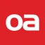
Oppland Arbeiderblad 23. sep. 2026 · kan krevje abonnement Crime
Den norske kryptoplattforma NBX har inngått avtale med Tieto Banktech om digitale og fysiske betalingskort som skal la kundane bruke stablecoins utan først å selje dei og flytte pengane til ein bank, melder Kaupr. Programmet startar med eit forhandsbetalt Visa-kort, der Tieto står for kortinfrastruktur og svindelovervaking og IDT Finance er BIN-sponsor. Administrerande direktør i NBX seier at det som skil selskapet ut, er at NBX utferdar eigne stablecoins i tråd med MiCA.
Kjelde: Kaupr 23. sep. 2026 Stablecoins Business
Originaltittel (dansk): Minister i nyt skatteopgør: Vil gøre op med »junglen af urimelige og uforståelige regler«
Ein gjennomgang av nesten 1000 saker om korleis danskar blir skattlagde for kryptoeigedelar fann feil i 23 av dei, mellom anna éin person som har betalt meir enn éin million danske kroner for mykje i skatt, melder Berlingske. Skatte- og vekstminister Jakob Engel-Schmidt reagerte på LinkedIn og lovar å rydde opp i det han kallar ein jungel av urimelege og uforståelege reglar.
Kjelde: 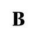
Berlingske 22. sep. 2026 TAX Policy
Originaltittel (norsk): Danske Bank: Ingen bank kan bygge euro-stablecoin alene
På Dansk Blockchain Forum i Folketinget sa Mads Clemmensen i Danske Bank at ingen bank kan byggje ein euro-stablecoin åleine, og at europeiske bankar bør byggje eit alternativ til dollaren saman gjennom konsortiet Qivalis, melder Kaupr. Ifølgje Clemmensen er 99,3 prosent av stablecoins knytte til amerikanske dollar, noko som strir mot målet om at Europa skal vere mindre avhengig av amerikanske aktørar. Han stadfesta at Qivalis planlegg å lansere euro-stablecoinen før årsskiftet.
Kjelde: Kaupr 22. sep. 2026 Stablecoins Banking
Originaltittel (dansk): Danskere svindlet for 89 millioner kroner på seks måneder
Danskar tapte 89 millionar kroner på investeringssvindel i første halvår 2026 fordelt på 1145 registrerte saker, og krypto spela ei rolle i 70,6 prosent av dei, ifølgje nye tal frå Finans Danmark som Ekstra Bladet viser til. Tapa auka med 67 prosent frå første til andre kvartal. Finans Danmark seier svindelen ofte startar med falske annonsar på sosiale medium som misbrukar bilete av kjende danskar, og at somme offer blir bedne om å lyge til banken sin.
Kjelde: 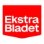
Ekstra Bladet 22. sep. 2026 Crime Consumer protection
Originaltittel (dansk): 100 år gammel lov koster danske kryptoinvestorer millioner. Nu vil minister problemet til livs
Eit svar frå den danske skatte- og vekstministeren Jakob Engel-Schmidt på eit spørsmål viser at 325 danskar har betalt skatt på kryptohandel sjølv om dei samla sett har tapt pengar, melder Berlingske. Ministeren kalla talet «faktisk ganske vilt» og vil endre den hundre år gamle regelen bak.
Kjelde: Berlingske 21. sep. 2026 TAX Policy
Den norske kryptobørsen Firi hadde inntekter på 42 millionar kroner og kostnader på 87,5 millionar i første halvår 2026, og eit underskot på 43,6 millionar, ifølgje ein investorpresentasjon som Finansavisen viser til. Til samanlikning tente selskapet 134,9 millionar i rekordåret 2024 og 28 millionar i 2025. Toppsjef Thuc Tuan Hoang peikar på svakare handel og ekstraordinære juridiske kostnader til MiCA-lisensen, og seier at Firi, som hadde ein likviditetsreserve på 151 millionar ved utgangen av juni, ikkje treng ny kapital.
Finansavisen 20. sep. 2026 · kan krevje abonnement Business
Originaltittel (norsk): Slår et slag for stablecoins
Johanna Belitz, Norden-sjef i Valour, meiner stablecoins kan gjere pengeoverføringar til utlandet mykje raskare og billegare, særleg til land utanfor EU/EØS med svakare bankinfrastruktur, melder Finansavisen. Etter hennar overslag kan ei bankoverføring på 10 000 kroner fort koste 300–600 kroner totalt, mot 10–50 kroner med stablecoins. Ho peikar òg på at stablecoins ikkje er omfatta av nokon statleg innskotsgaranti og har både teknisk risiko og risiko for å miste koplinga til dollaren.
Finansavisen 20. sep. 2026 · kan krevje abonnement Stablecoins
Originaltittel (norsk): Verdiendringer i bitcoin tynger NBX
NBX hadde eit underskot før skatt på 21,33 millionar kroner i første halvår 2026, mot 9,85 millionar året før, og mykje av tapet kjem av lågare bokført verdi på bitcoinbehaldninga, melder E24 frå rapporten. Samstundes gjorde NBX om 19,8 millionar kroner i lån og renter til 73,5 millionar nye aksjar. Bitcoinbehaldninga auka frå om lag 24 ved utgangen av juni til 28 i august.
Kjelde: 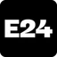
E24 18. sep. 2026 · kan krevje abonnement Business
Originaltittel (norsk): Regjeringen utreder midlertidig forbud mot nye kryptodatasentre (skriftlig spørsmål 15:3707)
I eit skriftleg spørsmål til digitaliserings- og forvaltningsministeren spør Sofie Marhaug (R) når regjeringa vil leggje fram den varsla statlege planføresegna for å avgrense kryptoutvinning. Ho spør òg kva EØS-føresegner og rettslege vurderingar som ligg til grunn for konklusjonen om at Noreg ikkje kan innføre eit generelt forbod, og viser til at Stortinget tre gonger på to år har bede regjeringa arbeide med eit forbod. Statsråd Torgeir Micaelsen svarte på spørsmålet 18. september.
Kjelde: Stortinget 18. sep. 2026 Mining Policy
Originaltittel (norsk): NBX mer enn doblet tapet i halvåret da MiCA-lisensen kom
NBX fekk MiCA-lisensen i juni, men driftsinntektene fall 45 prosent til 6,1 millionar kroner i første halvår 2026, og tapet etter skatt auka til 16,6 millionar frå 7,7 millionar, melder Kaupr frå halvårsrapporten. Inntektene frå handel på plattforma fall kraftig, medan inntektene frå OTC-handel og forvaring nesten vart tredobla. Det meste av forverringa kom av at bitcoinbehaldninga fall i verdi, noko selskapet omtaler som eit urealisert tap.
Kjelde: Kaupr 18. sep. 2026 Business MiCA
Originaltittel (norsk): Norway Wants to Ban Bitcoin Mining. The Miners Already Left | Rachel Geyer, EBEA
I eit foredrag for Bitcoinpolitisk Institutt i Oslo hevdar Rachel Geyer, leiar i European Bitcoin Energy Association, at det føreslegne norske forbodet mot bitcoin-utvinning rettar seg mot eit problem landet ikkje har. Ho seier at utvinning brukar under éin prosent av norsk straum, og at dei to store aktørane i nord alt er på veg over til kunstig intelligens fordi det løner seg betre. Etter hennar syn fungerer utvinning som eit fleksibelt datasenter, og framtida i Noreg ligg i å ta vare på spillvarmen.
Kjelde: Bitcoinpolitisk institutt 17. sep. 2026 Mining Policy
Originaltittel (norsk): GreenMerc trekker MiCA-klage og bruker Northcryptos lisens i Sverige
GreenMerc trekkjer klagen på at Finansinspektionen nekta Ijort Invest, morselskapet til Trijo, svensk MiCA-lisens, melder Kaupr. I staden skal konsernet betene den svenske marknaden under MiCA-lisensen til det finske søsterselskapet Northcrypto, som kan passporterast i heile EU/EØS, og Trijo-kundane blir flytte over. Administrerande direktør Ari Liukko seier at ingenting endrar seg for kundane, og at dei ikkje treng gjere noko.
Kjelde: Kaupr 17. sep. 2026 MiCA Business
Originaltittel (norsk): To tilsyn vil ikke si om kryptodistribusjon krever egen tillatelse
Verken ESMA eller Finansinspektionen i Sverige vil seie om det å marknadsføre og distribuere kryptotenester under eige merke krev MiCA-løyve, melder Kaupr etter å ha stilt spørsmålet til begge. Begge svarar at det kjem an på korleis tenesta fungerer i praksis. ESMA understrekar at ein autorisert tilbydar som set ut funksjonar, framleis må ha fullt ansvar for tenesta og vere kunden sin avtalepart.
Kjelde: Kaupr 17. sep. 2026 MiCA Regulering
Originaltittel (norsk): NBX registrert som MoneyGram-agent (børsmelding, engelsk)
Norwegian Block Exchange (NBX), notert på Euronext Growth Oslo, er registrert som agent for MoneyGram International hos den belgiske sentralbanken, som er MoneyGram sitt heimlandstilsyn i EØS, opplyser selskapet. Registreringa gjeld frå 4. oktober 2026 og skal ifølgje NBX la kundane ta ut kontantar hos MoneyGram over heile verda. NBX seier teknisk integrasjon og kommersiell lansering kjem etterpå, og at meir informasjon om tidspunkt kjem seinare.
Kjelde: NBX (børsmelding) 17. sep. 2026 Business Payments
Originaltittel (norsk): DNB tester tokeniserte innskudd i kroner med europeiske banker
DNB har vorte med i CBMT, eit nettverk der europeiske bankar testar tokeniserte bankinnskot over landegrensene innanfor dagens bankregulering, og tek med norske kroner som fjerde valuta ved sida av euro, dollar og yen, melder Kaupr. DNB vil teste korleis innskot i kroner på ei distribuert hovudbok kan flyttast mellom partar, vekslast mot andre valutaer og brukast til oppgjer av verdipapir. Det tyskleidde nettverket har med bankar som Commerzbank, UniCredit, ABN Amro og BNP Paribas.
Kjelde: Kaupr 16. sep. 2026 Tokenisation Banking
Originaltittel (norsk): Firi tar opp kampen om 1,1 millioner svenske kryptoeiere
Den norske kryptobørsen Firi lanserer appen sin i Sverige denne veka, med svensk BankID, Swish og innskot i svenske kroner, melder Kaupr. Firi, som fekk MiCA-lisens i mai og til no har vore i Noreg og Danmark, valde Sverige først, der om lag 1,1 millionar menneske, eller 13,4 prosent, alt eig krypto. Landssjefen i Sverige seier målet er kundar som investerer jamleg over tid, og at konkurransen i marknaden hardnar til.
Kjelde: Kaupr 15. sep. 2026 Business
Originaltittel (norsk): Hilbert finansierer utlån med innskudd på blokkjeden
Hilbert Finance, utlånsdivisjonen i svenske Hilbert Group, har lansert hLEND saman med Ember Protocol, der investorar selskapet har godkjent kan setje inn stablecoins i ein pott på blokkjeda som finansierer lån med sikring over lånebeløpet, melder Kaupr. Til no har låneboka berre vore finansiert utanfor blokkjeda, og per 31. august låg det om lag to millionar dollar i potten. Kaupr peikar på at meldinga ikkje seier kven som ber tapet dersom eit lån blir misleghalde.
Kjelde: Kaupr 15. sep. 2026 DeFi Business
Originaltittel (norsk): Kvarn avviser at Goobit-avtalen er agentforhold eller outsourcing
Finske Kvarn Capital meiner at samarbeidet med svenske Goobit verken er eit agentforhold eller utkontraktering etter MiCA, melder Kaupr. Medgründar Joonas Järvinen seier at ingen regulert funksjon blir delegert: kundane inngår avtale direkte med Kvarn, som held på det regulerte kundeforholdet og alle MiCA-pliktene, medan Goobit berre leverer eit merkevaremerkt teknisk grensesnitt. Goobit fekk sjølv avslag på MiCA-søknaden i Sverige 2. juli og har klaga.
Kjelde: Kaupr 15. sep. 2026 MiCA
Originaltittel (norsk): Firi lanserer i Sverige – etter permitteringer og milliontap
Kryptobørsen Firi hadde inntekter på 42 millionar kroner og eit underskot på 43,6 millionar i første halvår 2026, etter svakare handel og høge juridiske kostnader til MiCA-lisensen, melder Shifter frå halvårsrapporten til aksjonærane. I august permitterte Firi 13 av 58 årsverk, med grunngjeving i at organisasjonen hadde vorte større enn aktiviteten forsvarte. Tala kom same dag som selskapet opna for svenske kundar.
Kjelde: 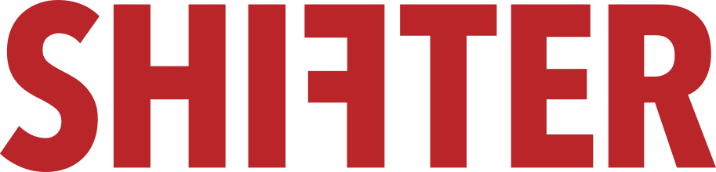
Shifter 15. sep. 2026 · kan krevje abonnement Business MiCA
Originaltittel (norsk): Finske Kvarn leier ut MiCA-tillatelsen sin til nordiske partnere
Kvarn Capital i Helsingfors sel produktet Kvarn X Embedded, som lèt andre selskap tilby kryptotenester under eige merke på Kvarns MiCA-løyve, som er passportert i heile EØS, melder Kaupr. Goobit, som sjølv har fått avslag på MiCA-løyve i Sverige, er den første offentleggjorde kunden. I modellen blir brukarane Kvarns kundar, med ein finsk avtalepart og tilsyn frå det finske finanstilsynet, og Kvarn opplyser at kryptoeigedelar ikkje er omfatta av investorvern eller innskotsgaranti.
Kjelde: Kaupr 14. sep. 2026 MiCA Business
Bitcoinpolitisk Institutt Noreg held eit gratis halvdagsseminar om bitcoin-utvinning og norsk kraft på Litteraturhuset i Oslo måndag 14. september, med forskarar, bransjefolk og politikarar, melder Kaupr. Programmet tek for seg kor mykje kraft utvinning faktisk krev, kva ho gjer med kraftsystemet og kva som står på spel politisk. Blant innleiarane er Rachel Geyer frå European Bitcoin Energy Association og tidlegare energiminister Ola Borten Moe, og seminaret blir strøymt.
Kjelde: Kaupr 14. sep. 2026 Mining Events
Originaltittel (norsk): Goobit lanserer sparing i bitcoin og gull på finsk lisens
Goobit, selskapet i Stockholm bak BTCX, lanserer Futureproof, ei spareplattform for bitcoin, gull og rentebærande aktiva, der dei konsesjonspliktige kryptotenestene blir leverte av finske Kvarn Capital under MiCA-løyvet deira, melder Kaupr. Goobits eigen MiCA-søknad vart avslått av Finansinspektionen 2. juli og er klaga inn, og berre kryptodelen av produktet fell inn under Kvarns løyve. Futureproof skriv på eigne nettsider at tenesta enno ikkje er lansert, og at detaljar kan bli endra.
Kjelde: Kaupr 14. sep. 2026 MiCA Business
Den danske skatte- og vekstministeren Jakob Engel-Schmidt held innlegg om krypto og skatt på Dansk Blockchain Forum, som Nordic Blockchain Association arrangerer på Christiansborg 17. september saman med Liberal Alliance, melder Kaupr. Det er andre året arrangementet går føre seg i det danske parlamentet, og temaet i år er vekst, nye arbeidsplassar og inntektsmoglegheiter dersom bransjen får reell politisk støtte. Blant innleiarane er også representantar for Danske Bank, Pluto.markets og Dansk Erhverv.
Kjelde: Kaupr 13. sep. 2026 TAX Policy Events
Originaltittel (norsk): H100-styrelederen vil ha flere oppkjøp i bitcoinbransjen
Sander Andersen, styreleiar i svenske H100 Group, meiner at bitcoinselskap under éin milliard dollar må kjøpe kvarandre, og at det største risikoen er å stå stille, melder Kaupr. I eit innlegg på X etter H100-oppkjøpet i august skriv han at ein større balanse trekkjer ein annan type investor, og at å kjøpe eit utprøvd team er billegare og raskare enn å byggje det sjølv. Etter hans syn kan skala gi indeksinkludering, fleire bankpartnarar og betre likviditet i aksjen.
Kjelde: Kaupr 13. sep. 2026 Business Bitcoin
Originaltittel (norsk): BTCX blir megler, og Goobits rapporterte inntekter faller
Sidan 18. august har Goobits BTCX ikkje lenger vore motpart i kundane sine handlar, men utfører ordrar på vegner av kundane mot eksterne likviditetskjelder, ei endring selskapet omtaler som ein del av tilpassinga til MiCA, melder Kaupr. Fordi handlane no blir førte etter nettometoden, fell rapporterte inntekter og vekslingskostnader kraftig, medan Goobit seier at bruttoresultatet, transaksjonsvolumet og resten av rekneskapen ikkje blir påverka. Ifølgje Goobit bind modellen òg mindre kapital og reduserer lager- og prisrisiko.
Kjelde: Kaupr 10. sep. 2026 MiCA Business
Eit rundebord om tokenisering hos Blockchain Sweden og finalen i hackathonet Blockathon sette blokkjede på dagsordenen under Nordic Tech Week i Stockholm, melder Kaupr. Rundt 30 deltakarar, mellom dei bankar, infrastrukturaktørar, rådgivarar og Finansinspektionen, diskuterte kva som skal til for at ein stor svensk finansinstitusjon tek tokeniserte verdipapir i ordinær drift innan utgangen av 2027. Blockathon-laga viste løysingane sine på hovudscena i Kungsträdgården.
Kjelde: Kaupr 10. sep. 2026 Events Tokenisation
Originaltittel (norsk): Norges Bank utforsker tokenisering med tolv aktører
Noregs Bank har for første gong namngjeve tolv finansinstitusjonar han har løpande kontakt med i kartlegginga av tokenisering, mellom dei DNB, Nordea, SEB, SpareBank 1, Euronext og KLP, melder Kaupr. Sentralbanken gjentek at han ikkje har funne grunn til å innføre digitale sentralbankpengar no, men at arbeidet med både DSP og tokenisering held fram; LinkedIn-innlegget kom utan rapport eller tidsplan. Samstundes er Noreg det einaste nordiske landet utan bankar i Qivalis, bankkonsortiet bak ein planlagd euro-stablecoin.
Kjelde: Kaupr 8. sep. 2026 Tokenisation Banking
Originaltittel (norsk): Nytt nederlag for Valuno i kampen om MiCA-lisens
Förvaltningsrätten i Stockholm har forkasta QB Europes anke over at Finansinspektionen nekta selskapet MiCA-lisens, opplyser Valuno Group, ifølgje Kaupr. Retten var samd med tilsynet i at risikovurderinga mot kvitvasking ikkje var godt nok tilpassa verksemda, og avviste òg krava om å sende saka tilbake eller hente inn ei avgjerd frå EU-domstolen. Valuno kan anke vidare og seier drifta held fram gjennom lisensierte partnarar, slik at selskapet ikkje er avhengig av eigen lisens.
Kjelde: Kaupr 7. sep. 2026 MiCA Regulering
Originaltittel (engelsk): Crypto-asset service providers in Finland must be authorised in the EU
Det finske finanstilsynet FIN-FSA minner om at det frå 1. juli 2026 ikkje er lov å tilby kryptotenester i EU eller EØS utan løyve, etter at overgangsperiodane i somme land gjekk ut 30. juni. Tilsynet tilrår kundane å sjekke ESMA-registeret og flytte til ein autorisert tilbydar dersom deira ikkje står der. Tenester frå uautoriserte tilbydarar i tredjeland kan berre brukast på kunden sitt eige initiativ, og slike tilbydarar kan ikkje marknadsføre andre tenester eller nye kryptoeigedelar til kunden.
Kjelde: Finanssivalvonta 30. juni 2026 MiCA Regulering